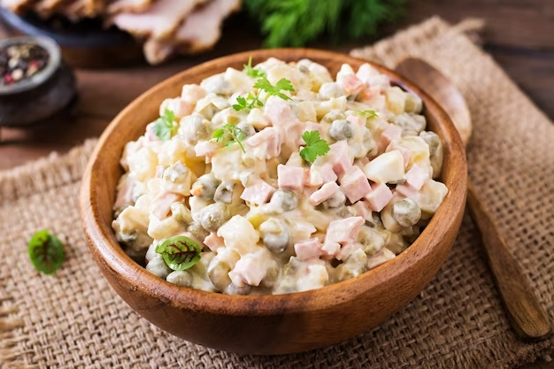

Russian Salad Recipe

Description
This Russian salad recipe is what my mom and grandmother make every time there's a family gathering or a special occasion. Leave out the ham to make this a vegetarian dish. The potatoes, carrots, and eggs do not have to be completely chilled after boiling.
Ingredients
-
6 potatoes, peeled
-
1 carrot, or more to taste
-
4 whole eggs
-
6 large pickles, cut into cubes
-
1 (15 ounce) can peas, drained
-
½ cup cubed fully cooked ham, or to taste
-
1 tablespoon chopped fresh dill, or to taste (optional)
-
½ cup mayonnaise, or to taste
Steps
Here's a very brief overview of what you can expect when you make russian salad:
-
Bring a large pot of water to a boil. Add potatoes, bring to a boil, and cook for 5 to 10 minutes. Add carrots and whole eggs and continue boiling until potatoes are tender, 10 to 15 minutes. Drain and slightly cool mixture.
-
Chop potatoes and carrot. Peel and chop eggs.
-
Mix potatoes, carrot, eggs, pickles, peas, ham, and dill together in a large bowl; stir in mayonnaise until salad is evenly coated.
-
Spread about 1/2 cup of the cottage cheese over the beef mixture. Sprinkle with about 1/3 cup of the mozzarella cheese.
Recipe Tip
You can use fresh parsley as a substitute for the dill if preferred
Return home